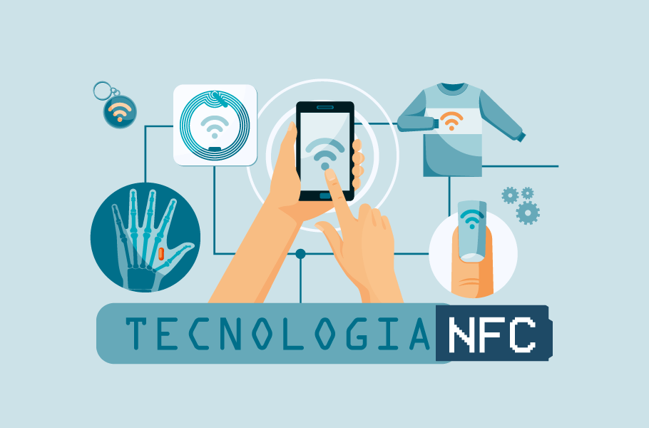

A inteligência Artificial é a principal tendência do TI em 2023
04 de janeiro de 2023
A revista Forbes apontou as 10 principais tendências em tecnologia que os líderes precisam estar atentos em 2023. De acordo com a publicação, o uso da inteligência artificial (IA) lidera o ranking das mudanças no mundo digital por já ser considerada realidade nos mais diversos tipos de organizações. O metaverso terá um direcionamento definido ainda este ano, bem como haverá o avanço na tecnologia blockchain e o desenvolvimento da computação quântica.
Leia maisNFC o que é?
04 de Julho de 2022 No próprio nome da tecnologia já tem uma pista, sabia? NFC vem de Near Field Communication, que em uma tradução aproximada quer dizer comunicação por campos próximos. Ou seja, ele só funciona de pertinho e passar em cada operação quantidades pequenas de informação. E sem problemas quanto a isso, porque ele foi criado para este tipo de troca, como pequenos pagamentos. Olha só alguns exemplos: você usando o cartão do transporte público, por exemplo. Quando você aproxima o cartão, a leitora identifica o chip NFC e troca informações que informam o saldo disponível a administrador e libera a roleta. O mesmo para caixas de banco ou de cinema, na hora de comprar o ticket para a sessão. A principal diferença para o Bluetooth e até mesmo o Wi-Fi é essa: ser prático para fazer trocas rápidas, pequenas quantidades de informação. Dá para encostar e trocar fotos? Dá também. No entanto, ela transmite menos do que o Bluetooth, feito para quantidades maiores de dados e com alcance de até 10 metros. É com este outro tipo de conexão que você faz coisas como ouvir músicas com fones sem fio, conectar mouses, teclados e caixas de som. Onde eu encontro NFC? Um exemplo é a Apple Pay, que só de encostar o seu celular na máquina de cobrança, efetua o pagamento do seu cinema, por exemplo. E como você precisa encostar o SEU aparelho na leitora, é um serviço bem seguro quanto ao uso de informações de cartão de crédito, por exemplo. Ah! E muitos smartphones dos mais avançados já têm essa tecnologia, como Galaxy S6 e S6 Edge, iPhone 6 e 6s e LG G4. Até os mais básicos, como Galaxy Core Plus e Galaxy A3, trazem o NFC por padrão. Legal, né?
Leia maisPostagens recentes
O metaverso terá um direcionamento definido ainda este ano, bem como haverá o avanço na tecnologia blockchain e o desenvolvimento da computação quântica.
Saiba Mais